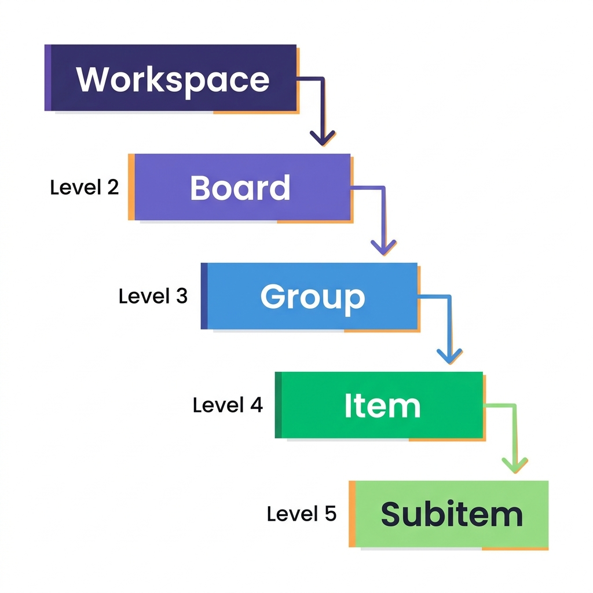
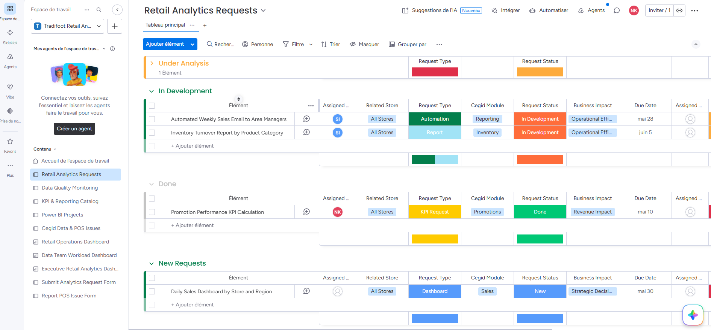
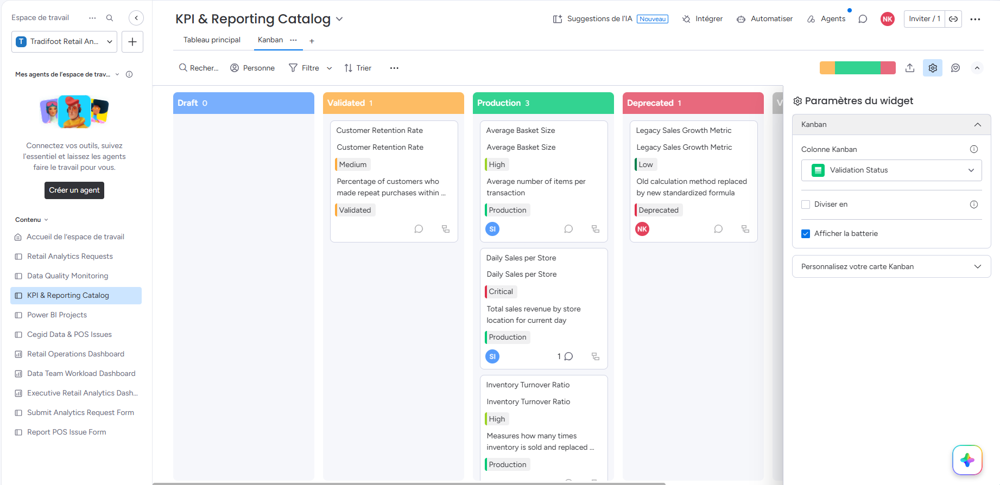
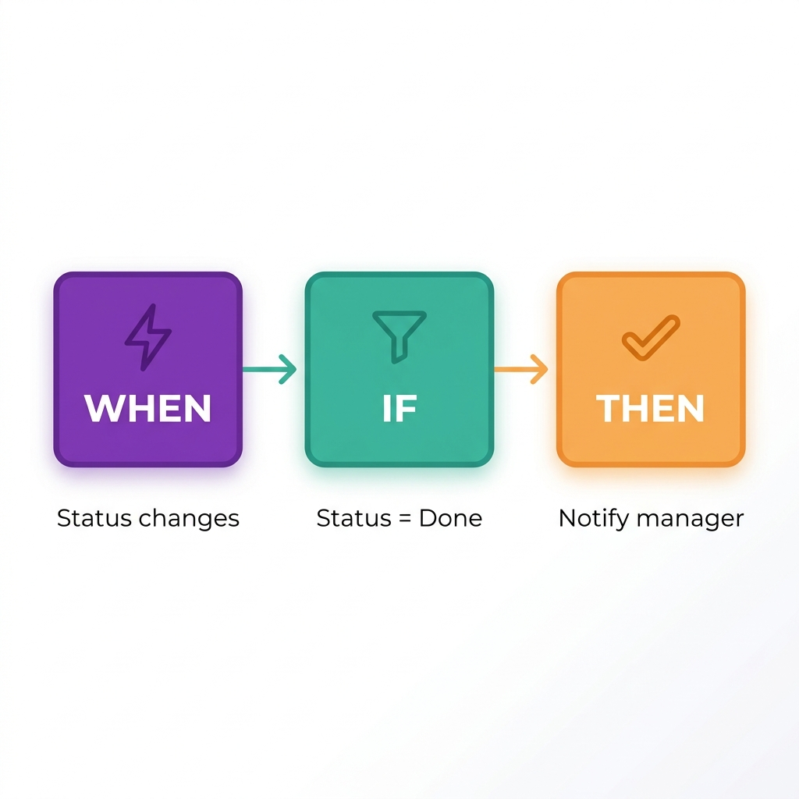
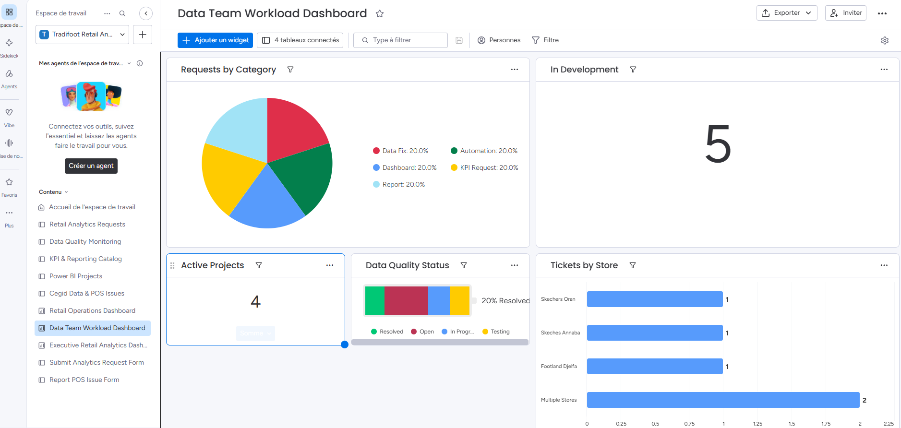

Bienvenue sur monday.com - Tradifoot
monday.com = un espace unique pour organiser vos projets, tâches, équipes et délais. Simple, visuel et collaboratif.
Centraliser l'information · Suivre les projets en temps réel · Réduire les réunions inutiles · Voir qui fait quoi et quand
Terminologie monday.com
Les termes essentiels expliqués simplement. Chaque concept en une phrase.
Comprendre la hiérarchie
monday.com s'organise en 5 niveaux. Pensez-y comme des dossiers imbriqués.

Créer votre premier projet
Suivez ces étapes pour mettre en place un vrai projet. Exemple : « Lancement Produit 2026 ».
Créer un Espace de travail
Cliquez sur « + » dans la barre latérale gauche, puis « Nouvel espace de travail ». Nommez-le selon votre département ou projet.
Créer un Tableau (Board)
Dans votre espace de travail, cliquez « + Ajouter » → « Nouveau Tableau ». Choisissez un nom clair et descriptif.
Ajouter des Groupes
Les groupes organisent vos tâches par phase, mois ou catégorie. Cliquez « + Ajouter un groupe ».
Ajouter des tâches (Items)
Cliquez « + Ajouter un élément » en bas de chaque groupe. Chaque ligne = une tâche à réaliser.
| Phase 1 — Préparation | |||
| Analyse marché | Terminé | NI | 1-10 juin |
| Brief créatif | En cours | MC | 5-12 juin |
| Validation budget | Bloqué | SA | 8-15 juin |
Assigner et planifier
Cliquez sur la colonne Personne pour assigner un responsable, et sur Chronologie pour définir les dates.

Les meilleures vues pour débuter
Changez de vue pour voir vos données différemment. Même données, perspectives différentes.

Les automatisations simplifiées
Les automatisations font le travail répétitif à votre place. Aucun code requis !
Le statut change
Notifier le manager
La date arrive
Changer le statut en « Urgent »
Toutes les sous-tâches = Terminé
Marquer l'item comme Terminé

🏆 Top 5 automatisations pour débuter
Les Dashboards simplifiés
Un dashboard = une page de suivi avec des graphiques pour tout voir en un coup d'œil.

🧩 Les widgets essentiels
Exemple réel d'entreprise
Voici comment notre équipe utilise monday.com au quotidien.
| 📋 Tableau : Onboarding Équipe | Statut | Responsable | Échéance |
|---|---|---|---|
| 📁 Accès & Configuration | |||
| Création comptes monday.com | Terminé | MO | 28 mai |
| Formation Data & Reporting | En cours | NI | 1 juin |
| 📁 Paramétrage ERP | |||
| Intégration Sage | À faire | MU | 15 juin |
| Accès IT + Badge collaborateurs | Terminé | MO | 28 mai |
| 📋 Tableau : Pipeline Commercial | Étape | Commercial | Montant |
|---|---|---|---|
| 📁 Opportunités actives | |||
| Client Stratégique A | Négociation | IM | 85 000 € |
| Réseau Retail Nord | Gagné | RA | 120 000 € |
| 📁 Prospects à qualifier | |||
| Nouveau Distributeur | Premier contact | IM | 30 000 € |
| 📋 Tableau : Tickets IT | Priorité | Assigné | Statut |
|---|---|---|---|
| 📁 Urgent | |||
| Serveur ERP lent | 🔴 Haute | MO | En cours |
| 📁 Normal | |||
| Accès monday.com équipe | 🟡 Moyenne | MO | À faire |
| Mise à jour postes retail | 🟢 Basse | NI | Terminé |
| 📋 Tableau : Campagnes Marketing | Statut | Responsable | Budget |
|---|---|---|---|
| 📁 Q2 2026 | |||
| Campagne LinkedIn Ads | En cours | MCNI | 5 000 € |
| Newsletter mensuelle | Envoyé | MC | 500 € |
| Vidéo produit | Bloqué | RA | 8 000 € |
Erreurs fréquentes des débutants
Évitez ces pièges courants pour une expérience réussie dès le premier jour.
Résumé rapide — Cheat Sheet
Tout ce qu'il faut retenir sur une seule page. Imprimez-la et gardez-la à portée de main !
📖 Termes essentiels
🚀 Ordre de configuration recommandé
✅ Bonnes pratiques
Commencez simple, explorez progressivement, et n'hésitez pas à demander de l'aide !